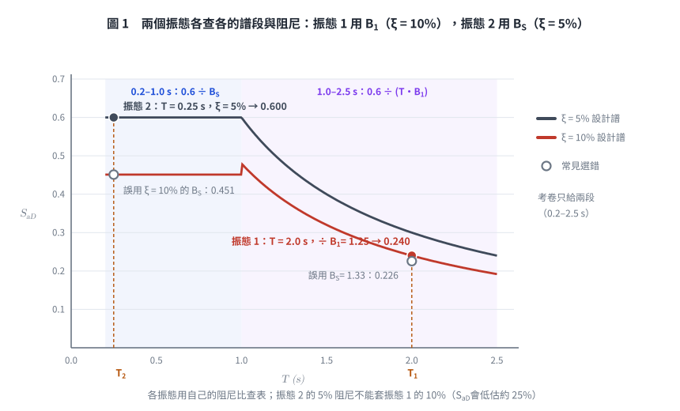
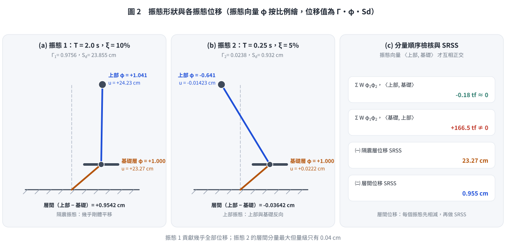

📄 題目正本：考卷原文・附圖・判讀清單（已確認）
SD-2011-1 題目正本
本檔只記錄考卷上寫了什麼、圖上畫了什麼，不含任何解法。解析見同資料夾
SD-2011-1.md。
判讀清單經使用者確認前，狀態為「待確認」；確認後本檔原則上不再修改（改動須回考卷原圖並記 log）。
| 項目 | 內容 |
|---|---|
| 考卷 | raw/exams/SD-2011_結構動力分析與耐震設計.pdf，第 1 頁（正面），第一題 |
| 考年 | 2011（民國100年）專技高考結構工程技師（第2次）「結構動力分析與耐震設計」 |
| 配分 | 25 分（10／10／5） |
| 附圖 | 無（本題只有文字、公式與阻尼比修正係數表，表照錄於 §2） |
| 判讀狀態 | 已確認（2026-11-16，使用者授權依 Claude 建議；定案：#1 振態向量分量順序採〈上部結構, 基礎層〉。原轉錄：2026-11-16 轉錄；pdftoppm 110 dpi 整頁＋450 dpi 局部放大，PDF 文字層核對原文；盲讀於開啟解析前完成） |
1. 考卷原文（逐字）
一、考慮一單層樓隔震結構，其上部結構及基礎層之重量分別為 300 tf 及 200 tf，經特徵分析得到其結構動力特性如下：
$T_1=2.0\,\text{sec}$；$\xi_1=10\%$；$\boldsymbol{\varphi}_1^T=\langle 1.041,\ 1.000\rangle$
$T_2=0.25\,\text{sec}$；$\xi_2=5\%$；$\boldsymbol{\varphi}_2^T=\langle -0.641,\ 1.000\rangle$
已知工址之設計水平加速度反應譜係數 $S_{aD}$ 如下：
$$S_{aD}=\frac{0.6}{B_S}\qquad 0.2\,\text{sec}<T\le 1.0\,\text{sec}$$
$$\phantom{S_{aD}}=\frac{0.6}{TB_1}\qquad 1.0\,\text{sec}<T\le 2.5\,\text{sec}$$
其中，阻尼比修正係數 $B_S$ 與 $B_1$ 如下：
| 有效阻尼比 $\xi$ (%) | $B_S$ | $B_1$ |
|---|---|---|
| 5 | 1.00 | 1.00 |
| 10 | 1.33 | 1.25 |
| 20 | 1.60 | 1.50 |
試根據反應譜分析，以 SRSS 疊加法計算求解：
㈠隔震系統之最大位移（10 分）
㈡最大層間位移（10 分）
㈢隔震系統之最大剪力（5 分）
2. 考卷給的公式、附表與參數
- 給定：上部結構重量 300 tf、基礎層重量 200 tf（重量，不是質量）。
- 兩個振態的週期、阻尼比、振態向量（§1）；振態向量以第二分量為 1.000 寫出。
- 設計反應譜：只給 $0.2<T\le1.0$ s（$0.6/B_S$）與 $1.0<T\le2.5$ s（$0.6/(TB_1)$）兩段；$T\le0.2$ s、$T>2.5$ s 沒有給。
- 阻尼比修正係數表：$\xi=5$、10、20% 三列（§1 照錄）。
- 考卷沒有給：振態向量兩個分量各對應哪個自由度（見判讀 #1）、$S_{aD}$ 的單位、$g$ 的數值、隔震層與上部結構的勁度、樓高。
- 卷首注意事項：㈠可以使用電子計算器。㈡不必抄題，作答時請將試題題號及答案依照順序寫在試卷上，於本試題上作答者，不予計分。㈢本試題之相關符號、公式、物理常數及設計參數未提及時，請依規範自行合理推斷或假設。考試時間：2 小時。
3. 附圖
本題無附圖。
4. 判讀清單
| # | 項目 | 判讀 | 圖上／題文依據 | 把握 |
|---|---|---|---|---|
| 1 | 振態向量分量順序 | $\langle$上部結構, 基礎層$\rangle$：第一分量是上部結構、第二分量是基礎層（隔震層上方的基礎版） | 題文未寫明。以題給重量做質量正交性檢核：取〈上部, 基礎〉時 $300(1.041)(-0.641)+200(1)(1)=-0.18\approx0$；反過來〈基礎, 上部〉時 $200(1.041)(-0.641)+300(1)(1)=166.5\neq0$。只有前者使兩振態正交，且第一振態上部分量略大於基礎分量符合隔震振態形狀 | 不確定（解讀）；定案採〈上部, 基礎〉，理由為正交性檢核（使用者授權依 Claude 建議確認） |
| 2 | 「最大層間位移」 | 上部結構相對基礎層的位移（單層樓只有這一個層間） | 題文「單層樓隔震結構」；㈠ 另問隔震系統位移 | 確定（解讀） |
| 3 | 「隔震系統之最大位移」 | 基礎層（隔震層頂）相對地面的位移 | 題文 | 確定（解讀） |
| 4 | 「隔震系統之最大剪力」 | 通過隔震層（隔震元件）的總剪力，即上部結構與基礎層慣性力合計 | 題文；隔震系統位於基礎層下方 | 確定（解讀） |
| 5 | $S_{aD}$ 單位 | 以 $g$ 計的無因次係數（乘重量得力） | 題文「反應譜係數」，數值 0.6 量級 | 確定（解讀） |
| 6 | 重量與質量 | 300、200 tf 為重量，質量為 $W/g$ | 題文「重量分別為」 | 確定 |
| 7 | 譜段與修正係數 | $T_1=2.0$ s 落在 $1.0<T\le2.5$ s 段（用 $B_1$）；$T_2=0.25$ s 落在 $0.2<T\le1.0$ s 段（用 $B_S$）；$\xi_1=10\%$、$\xi_2=5\%$ 都在表上，不需內插 | 題文公式與表 | 確定 |
| 8 | 組合方法 | 指定 SRSS | 題文「以 SRSS 疊加法」 | 確定 |
| 9 | 規範版本 | 本題反應譜與 $B_S$、$B_1$ 表由考卷直接給定，屬題意資料，照用 | 題文「已知工址之…如下」 | 確定（解讀） |
| 10 | 考卷沒有給 | 隔震層勁度、上部結構勁度、$g$ 的數值 | 題文 | 確定 |
轉錄：2026-11-16（SD-U3-2 題目正本推廣・組 U3-2-G2）
確認：2026-11-16 使用者授權依 Claude 建議確認（SD-U3-2 題目正本推廣・組 U3-2-G2，關卡一）
SD-2011-1｜隔震結構 2DOF 反應譜分析（SRSS）：最大位移、層間位移、隔震剪力
題目資訊
| 欄位 | 內容 |
|---|---|
| 題號 | SD-2011-1 |
| 考年 | 2011（民國100年） |
| 科目分類 | SD-U3-2（隔減震原理） |
| 副分類 | SD-U1-3（多自由度系統動態分析） |
| 關鍵詞 | 基礎隔震、2DOF、模態疊加法、SRSS、反應譜分析、模態參與因子、有效模態質量、阻尼修正係數 |
| verificationStatus | unverified |
1. 題目（考卷原文見題目正本）
考卷原文、公式／附表、附圖與判讀清單（已確認）見
SD-2011-1-problem.md。本節只列解題時最容易讀錯的地方與本解使用的記號；題意以題目正本為準。
常見誤讀
| 項目 | 正確判讀 | 常見誤讀 |
|---|---|---|
| 振態分量順序 | $\boldsymbol\varphi^T=\langle$上部結構, 基礎層$\rangle$（判讀 #1，以質量正交性檢核定案，使用者授權依建議確認） | 第一分量當成基礎層（此時兩振態不正交） |
| 重量與質量 | 300、200 tf 是重量，質量為 $W/g$（判讀 #6） | 直接當質量代入 |
| 最大層間位移 | 上部結構相對基礎層的位移（判讀 #2；舊 §1 加註「上部結構相對隔震層之最大變形」同義） | 拿 SRSS 後的兩個絕對位移相減 |
| 隔震系統剪力 | 通過隔震層的總剪力，含上部結構與基礎層的慣性力（判讀 #4） | 只算上部結構的慣性力 |
| 譜段與修正係數 | $T_1=2.0$ s 用 $B_1$（$\xi_1=10\%$）；$T_2=0.25$ s 用 $B_S$（$\xi_2=5\%$）；表上已有，不需內插（判讀 #7） | 振態 1 誤用 $B_S$ |
| $S_{aD}$ 單位 | 以 $g$ 計的係數（判讀 #5） | 直接當 m/s² |
本解記號： DOF 1＝上部結構、DOF 2＝基礎層（振態向量第一、第二分量）；$\Gamma_i=L_i/M_i^*$，以重量計時共同因子 $1/g$ 消去；$S_{d,i}=S_{aD,i}\,g\,T_i^2/4\pi^2$。
解題步驟
前置：DOF 配置說明
| DOF | 物理對應 | 質量 mⱼ |
|---|---|---|
| DOF 1（φ 第一分量） | 上部結構（絕對位移） | m₁ = 300/g Tf·s²/m |
| DOF 2（φ 第二分量） | 隔震層（絕對位移） | m₂ = 200/g Tf·s²/m |
振態 1（T₁ = 2.0 s）：整體結構近似剛體移動（φ₁₁ ≈ φ₁₂ = 1），為隔震主振態。
振態 2（T₂ = 0.25 s）：上部結構與隔震層反向，為上部結構振態。
步驟一：各振態之設計反應譜係數 SaD 與譜位移 Sd
振態 1（T₁ = 2.0 sec, ξ₁ = 10%）：位於 1.0 s < T ≤ 2.5 s 段，查表 B₁(10%) = 1.25
$$S_{aD,1} = \frac{0.6}{T_1 \cdot B_1} = \frac{0.6}{2.0 \times 1.25} = \frac{0.6}{2.5} = 0.240$$
$$S_{d,1} = S_{aD,1} \cdot \frac{T_1^2}{4\pi^2} \cdot g = 0.240 \times \frac{4.0}{39.478} \times 9.81 = 0.240 \times 0.9939 = \mathbf{0.2386 \text{ m}}$$
振態 2（T₂ = 0.25 sec, ξ₂ = 5%）：位於 0.2 s < T ≤ 1.0 s 段，查表 Bs(5%) = 1.00
$$S_{aD,2} = \frac{0.6}{B_S} = \frac{0.6}{1.00} = 0.600$$
$$S_{d,2} = 0.600 \times \frac{(0.25)^2}{4\pi^2} \times 9.81 = 0.600 \times 0.015519 = \mathbf{0.009311 \text{ m}}$$

圖 1 兩個振態各自依週期選譜段、依自己的阻尼比查表。攔下兩種錯：振態 1 誤用 $B_S$（0.226），以及振態 2 套用振態 1 的 10% 阻尼（$B_S=1.33$ → 0.451，$S_{aD}$ 低估約 25%）。
步驟二：模態參與因子 Γᵢ
$$\Gamma_i = \frac{L_i}{M_i^*}, \quad L_i = \sum_j m_j \phi_{ij}, \quad M_i^* = \sum_j m_j \phi_{ij}^2$$
（各質量以 Tf·s²/m 計，共同因子 1/g 在 Γᵢ 計算時消去）
振態 1：{φ₁} = {1.041, 1.000}ᵀ
$$L_1 = 300 \times 1.041 + 200 \times 1.000 = 312.3 + 200.0 = 512.3 \text{ (Tf)}$$
$$M_1^* = 300 \times 1.041^2 + 200 \times 1.000^2 = 325.10 + 200.0 = 525.10 \text{ (Tf)}$$
$$\Gamma_1 = \frac{512.3}{525.10} = 0.9757$$
振態 2：{φ₂} = {−0.641, 1.000}ᵀ
$$L_2 = 300 \times (-0.641) + 200 \times 1.000 = -192.3 + 200.0 = 7.7 \text{ (Tf)}$$
$$M_2^* = 300 \times 0.641^2 + 200 \times 1.000^2 = 123.26 + 200.0 = 323.26 \text{ (Tf)}$$
$$\Gamma_2 = \frac{7.7}{323.26} = 0.02382$$
步驟三：（一）隔震系統最大位移
隔震系統位移 = DOF 2（隔震層絕對位移）
各振態對 DOF 2 之貢獻：
$$U_{2,i} = \Gamma_i \cdot \phi_{i2} \cdot S_{d,i}$$
| 振態 | Γᵢ | φᵢ₂ | Sdᵢ (m) | 貢獻 Uᵢ₂ (m) |
|---|---|---|---|---|
| 1 | 0.9757 | 1.000 | 0.2386 | 0.9757 × 1.000 × 0.2386 = 0.2327 |
| 2 | 0.02382 | 1.000 | 0.009311 | 0.02382 × 1.000 × 0.009311 = 0.0002219 |
SRSS 組合：
$$U_2 = \sqrt{0.2327^2 + 0.0002219^2} \approx 0.2327 \text{ m}$$
$$\boxed{U_{isolation,max} \approx 23.3 \text{ cm}}$$
物理意義： 振態 1（隔震模態）主導，幾乎貢獻全部位移（99.9%）。振態 2 貢獻不足 0.1%，可忽略。
步驟四：（二）最大層間位移（上部結構相對隔震層）
層間位移 = DOF 1 − DOF 2（上部結構相對隔震層之變形）
各振態對相對位移 (φᵢ₁ − φᵢ₂) 之貢獻：
| 振態 | Γᵢ | φᵢ₁ − φᵢ₂ | Sdᵢ (m) | 貢獻 Δᵢ (m) |
|---|---|---|---|---|
| 1 | 0.9757 | 1.041 − 1.000 = +0.041 | 0.2386 | 0.9757 × 0.041 × 0.2386 = +0.009547 |
| 2 | 0.02382 | −0.641 − 1.000 = −1.641 | 0.009311 | 0.02382 × (−1.641) × 0.009311 = −0.0003639 |
SRSS 組合：
$$\Delta_{max} = \sqrt{0.009547^2 + 0.0003639^2} = \sqrt{9.115 \times 10^{-5} + 1.324 \times 10^{-7}} \approx 0.009550 \text{ m}$$
$$\boxed{\Delta_{inter-story,max} \approx 0.955 \text{ cm} \approx \mathbf{0.96 \text{ cm}}}$$
物理意義： 上部結構幾乎不變形（僅 ~1 cm），地震能量幾乎全部被隔震層吸收（23.3 cm）。這正是隔震設計的核心效益：保護上部結構免受地震損傷。

圖 2 振態形狀、各振態位移與層間位移。(c) 的正交性檢核攔下分量順序讀反（〈基礎, 上部〉時 $\sum W\varphi_1\varphi_2=166.5$ tf，不正交）；(a)(b) 標出每個振態先相減的層間量，提醒層間位移要在振態內相減後再 SRSS。
步驟五：（三）隔震系統最大剪力
各振態之有效模態質量（等效地震力計算用）：
$$M_{eff,i} = \frac{L_i^2}{M_i^*} \quad [\text{Tf}]$$
各振態之模態基底剪力：
$$V_i = M_{eff,i} \times S_{aD,i}$$
| 振態 | Lᵢ (Tf) | Mᵢ* (Tf) | M_eff,i = Lᵢ²/Mᵢ* (Tf) | SaD,i | Vᵢ (Tf) |
|---|---|---|---|---|---|
| 1 | 512.3 | 525.10 | 512.3²/525.10 = 499.8 | 0.240 | 119.95 |
| 2 | 7.7 | 323.26 | 7.7²/323.26 = 0.183 | 0.600 | 0.110 |
SRSS 組合：
$$V_{isolation} = \sqrt{119.95^2 + 0.110^2} \approx 119.95 \text{ Tf}$$
$$\boxed{V_{isolation,max} \approx \mathbf{120 \text{ Tf}}}$$
驗核（有效模態質量比）：
$$\frac{M_{eff,1}}{W_1 + W_2} = \frac{499.8}{500} = 99.96\%$$
振態 1 捕獲 99.96% 的總質量 → 完全符合隔震結構「單一振態主導」的特性。
計算彙整
| 項目 | 振態 1 | 振態 2 | SRSS 結果 |
|---|---|---|---|
| SaD | 0.240 | 0.600 | — |
| Sd (m) | 0.2386 | 0.009311 | — |
| Γᵢ | 0.9757 | 0.02382 | — |
| L_eff (Tf) | 499.8 | 0.183 | — |
| (一) 隔震系統位移 (m) | 0.2327 | 0.0002219 | 0.2327 m = 23.3 cm |
| (二) 層間位移 (m) | 0.009547 | −0.0003639 | 0.00955 m = 0.96 cm |
| (三) 隔震剪力 (Tf) | 119.95 | 0.110 | ≈ 120 Tf |
解題關鍵觀念
1. 隔震結構的振態特性
| 振態 | T | ξ | 物理意義 |
|---|---|---|---|
| 振態 1（隔震振態） | 2.0 s（長） | 10% | 整體結構似剛體，主要在隔震層變形 |
| 振態 2（結構振態） | 0.25 s（短） | 5% | 上部結構相對隔震層有較大相對運動 |
隔震設計使振態 1 的有效模態質量 ≈ 總質量（99.96%）→ 準確的等效單自由度分析。
2. 阻尼修正係數的選用
- 振態 1（T₁ = 2.0 s > 1.0 s，長週期段）：使用 B₁
- 振態 2（T₂ = 0.25 s，短週期段）：使用 Bs
高阻尼（ξ₁ = 10%）對長週期的 B₁ 修正有限（B₁ = 1.25），但 Bs = 1.33 對短週期修正更大（本題振態 2 為 5%，Bs = 1.00，無折減）。
3. SRSS 組合的適用性
本題振態 1 與振態 2 週期相差懸殊（2.0 s vs 0.25 s，比值 = 8），相關性可忽略 → SRSS 適用。
4. 常見陷阱
- ❌ 誤用 Bs 計算振態 1（T > 1.0 s 應用 B₁）
- ❌ 層間位移不能由 SRSS 後的絕對位移相減：應先對每個振態計算相對位移，再做 SRSS
- ❌ 隔震系統剪力誤用 V = k × U：應用有效模態質量法
修正日期：2026-11-16（§1 改為指向題目正本）
修正日期：2026-11-16（非勘誤）圖解補繪：圖 1 譜段與阻尼修正係數選用、圖 2 振態形狀與分量順序檢核（向量圖，腳本 gen_SD-2011-1.py，可重跑）